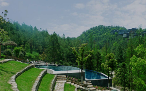
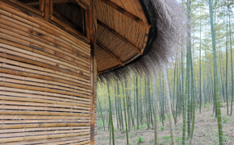
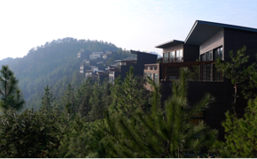

Valley Peach Story
Following the popularity of holiday village, a small boutique retreat,
valley peach was looking to satiate the growing demand for a city
getaway. In the rolling hills at the foot of Moganshan was an anonymous
green valley, full of peach, now known as valley peach.
African and Asian elements were fused to bring the magic of African
hospitality and intimacy with nature to an Asian setting. All buildings
were designed to minimise the environmental impact and blend with the
natural surroundings, not just with regards to materials used, but also
including orientation of each building. The result is an eclectic and
unique mix of buildings in harmony with the natural environment.

Lay of the Land
It’s no surprise that the layout of the resort stemmed organically
from the existing landscape. The flat land became an impacting welcome,
complete with fields with grazing horses; the Tree Top Villas perch
literally atop the trees; the amphitheatre sits comfortably into the
slope; even the infinity pool blends in. In addition to achieving
minimal landscaping, the design was to ensure minimal disturbance
to the existing environment.

Local Heritage
In addition to cutting edge technology, traditional construction
techniques such as stonemasonry walls, bamboo and recycled timber
framed structures, and traditional mud wall construction were used.
The Earth Huts and Main Lobby were built with modern rammed earth
walls using compressed mud from the local area, resulting in an
environmentally friendly structure and striking coloured striations
and design.

Build by Numbers
Innovative construction technology such as prefabricated SIP
(structural insulated panels) was used in the construction of the Tree
Top Villas. This time-saving, resource-saving and environment-preserving
method meant that all main components – walls, floors, ceilings – were
made off-site, clearly labeled and assembled on-site, eradicating the
need for large cranes and machinery. It was literally a case of build-by-numbers.